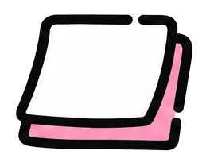
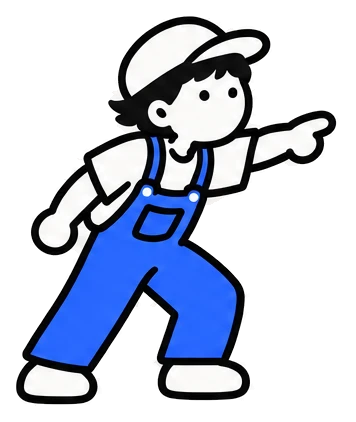

出会いから始まる、新しい私への物語。
出会いの創造HELLO 仮出会いから、物語は始まる。
新しい自分との出会い、そして仲間や可能性との出会い。私たちは、その一つひとつをかけがえのない瞬間として大切にし、ここから続く変化を一緒に楽しみます。
株式会社ハローニューミーJR博多駅から徒歩7分
ハローニューミーについてME 私らしさの尊重 私らしく、働く。
私らしさの尊重
募集中の職種サービス管理責任者支援の設計とチームの推進役月給25万円〜- 募集中の職種職業指導員「働く」をいちばん近くで支える伴走者月給20万円〜
時給1,057円〜 - 募集中の職種動画編集アシスタント再出発を支える特別枠（業務委託）月収の目安 3万〜5万円

仮見出しの文案